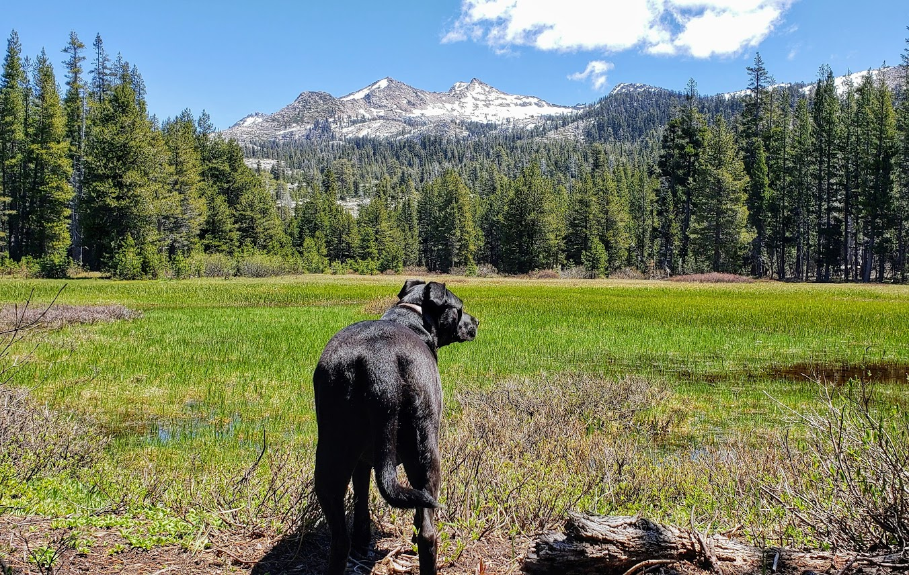
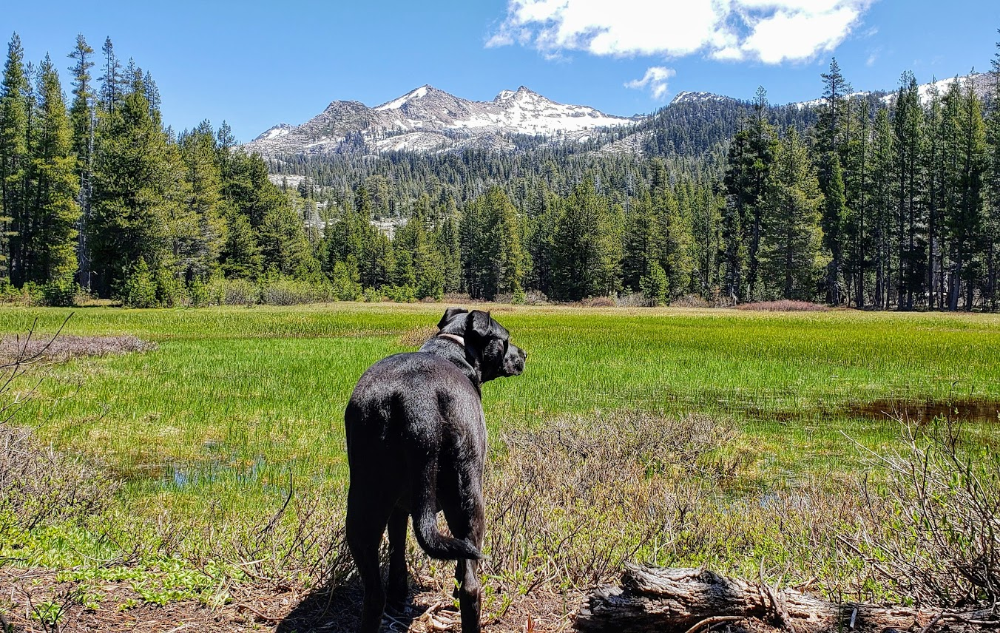
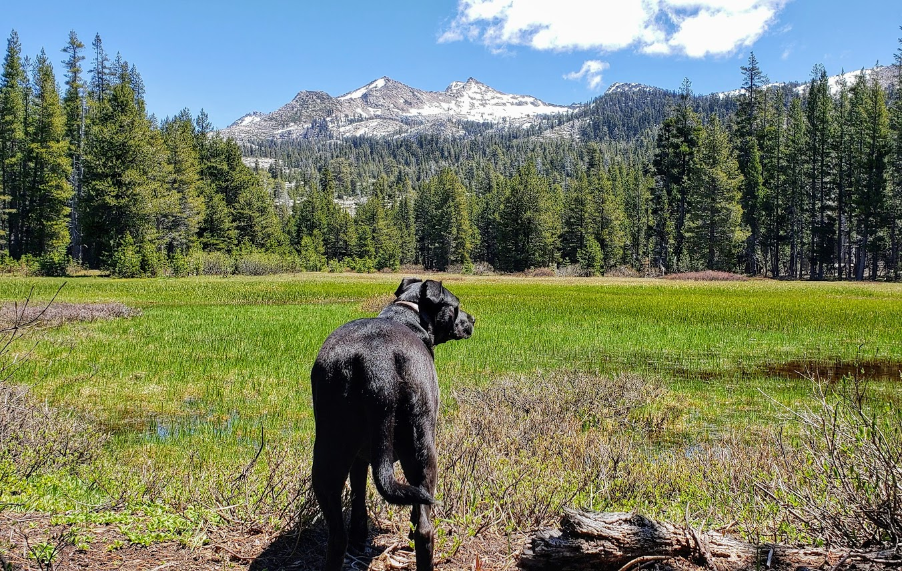

Growing up my parents took us camping evey summer. We lived in a very small town and spent a lot of time exploring outside of our house. But I never really got into hiking despite liking being outside and living in such a hikable area. You definitely woudln't find me on a trail on a weekend and I didn't own a pair of hiking boots.
We always had pets growing up as well. I have very fond memories of the variuos dogs and cats I grew up with. Even though they were family pets, I didn't share a lot of the responsibilities that came with owning a pet. They spent a lot of time outside and were not the kind of pets that went everywhere with us.
My husband and I had been looking for a dog for some time. Nothing felt right and we were starting to get discouraged so we decided to back of from the search for a little while. About a week after that decision had been made, my friend Cassie reached out and asked if we were still looking for a dog. A friend of a friend of hers was moving and looking to rehome their dog. Cassie came with me to go meet her. The dog's name was Guiness and she was this sweet 50lb black and white pit mix pup. She came right over and sat at my feet and I just fell in love. I came back a week later to bring her home.
It took her a few months to open up to us, but I noticed Guinness (now Charlotte) seemed the happiest when we went on walks. So I started looking for longer walks to go on around our neighborhood. We were living in the suburbs of a city by then and the option of hiking the mountains where I grew up wasn't as accessible. But I wanted to make her happy and to give her the life she deserved so pretty soon we were finding trails in the city that felt less like we were in the city. Not long after that, I was researching dog friendly trails that weren't too far away that I could take her on on my days off. Seeing her enjoy our hikes so much made me enjoy them too. She became my hiking buddy when my husband wasn't able to join us. I would take pictures to show him where we had been. Then I realize that not only did I really like hiking, I really liked taking photos of the places we went. I looked forward to my days off because I knew that meant a new trail for me and Charlotte, a new adventure, and some new scenery to take photos of.
A few years passed and my husband and I decided to move from California. We wanted to move somewhere where the outdoors was easily accessible and where we could go on a lot of adventures with our dogs (by then, we had just adopted another dog named Willoughby). We decided to move to Central Oregon. We spent our first year here going on 1-2 hikes a week. It was amazing and beautiful. We got to see so many stunning views.
Then, the Covid-19 virus came. It changed a lot of things for a lot of people and we were no exception. We stayed indoors a lot in 2020. Too worried that any walk outside of our neighborhood could go sideways and land us in the hospital, the last place we wanted to be during a pandemic. A lot of trails were closed anyway and I didn't want to risk it. My mental health took a hit and I realized just how much hiking has impacted my life. There were days that the only thing I accomplished that day was walking the dogs. If not for them, I probably wouldn't get off the couch for days at a time. There's a lot of times that they, especially Charlotte, have saved me from myself.
Now it's a new year, and hopefully soon I'll be back to hiking weekends again. I can tell Charlotte misses the trail too. I look into her chocolate brown eyes and all I see are mountians and forests and adventure. I'll always be grateful to her for showing me the great outdoors.
